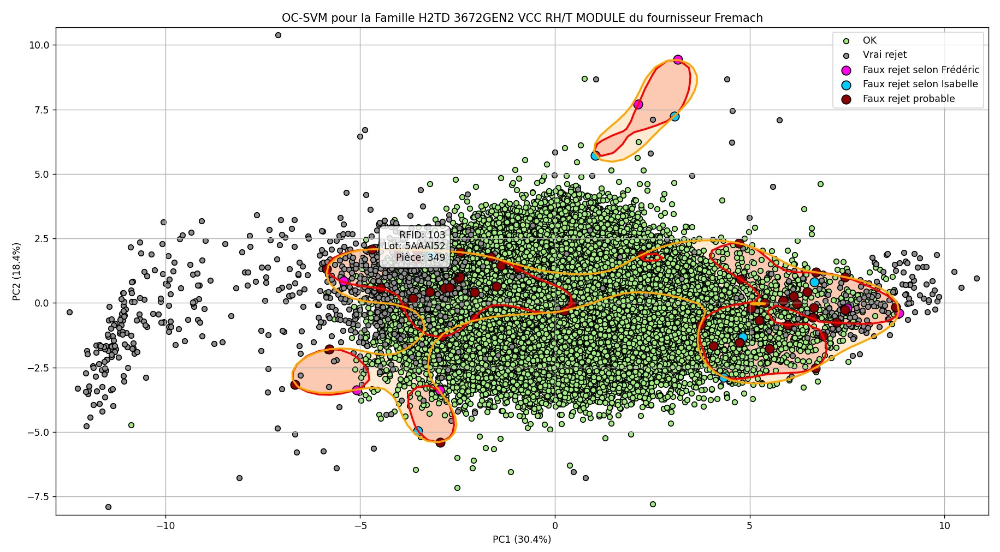

Through my internships, I have had the opportunity to apply theoretical knowledge from my engineering studies to real-world industrial and research problems, from aeronautical Big Data analysis at the French Civil Aviation Authority to process engineering and data science in advanced manufacturing.
Data Scientist Intern — DGAC / DSNA
Data Office · Toulouse, France
2 mois · 2026 · Encadrement : Céline Demouge (Cheffe de programme — Data Scientist, DGAC/DSNA/CAB/Data Office)
▸ Contexte & Périmètre
Au sein du Data Office de la DSNA (Direction des Services de la Navigation Aérienne), j'ai réalisé un stage de recherche appliquée autour du traitement Big Data de trajectoires ADS-B (OpenSky Network) et de données météorologiques 4D (Copernicus ERA5). L'étude portait sur les 8 grands aéroports français (Paris-CDG, Paris-Orly, Lyon-Saint-Exupéry, Nice-Côte d'Azur, Marseille-Provence, Bordeaux-Mérignac, Nantes-Atlantique, Toulouse-Blagnac), avec un focus approfondi sur les corridors TLS-CDG et TLS-ORY.
Le travail s'est structuré autour de deux grandes problématiques : l'analyse comportementale et la détection d'anomalies sur les trajectoires d'approche finale (impact COVID-19 et Guerre en Ukraine sur le trafic aérien), puis la fusion spatio-temporelle 4D des données radar/ADS-B avec la météorologie ERA5, afin de modéliser statistiquement la stabilité des approches en TMA.
Exploration, Détection d'anomalies & Analyse de l'impact des crises
Prise en main données radar/ADS-B · Statistiques descriptives · ML non supervisé · COVID-19 & Ukraine
Cette première partie a couvert l'exploration statistique des données de trajectoires d'approche finale enregistrées via le réseau OpenSky, l'application de règles métier ATC pour le filtrage et la qualification des données, et la mise en place de pipelines de détection d'anomalies par machine learning non supervisé. L'analyse comparative du trafic avant/pendant/après la crise COVID-19 et l'impact de la Guerre en Ukraine sur les corridors européens ont constitué le fil conducteur.
Livrables — Partie 1
Notebook 1
Corridor TLS-CDG · Analyse & détection
Notebook 2
Corridor TLS-ORY · Analyse & détection
Notebook 3
Comparaison inter-corridors & synthèse
Rapport d'étude complet
Partie 1 · PDF · Thomas Canisares-Morère
Fusion 4D, Clustering & Modélisation Statistique Avancée
Pipeline Polars/Parquet · Fusion ADS-B × ERA5 · HDBSCAN · GAM & Modèles Mixtes sous R
La deuxième partie a porté sur la construction d'un pipeline Big Data complet (Polars, PyArrow, Parquet)
pour la fusion spatio-temporelle 4D des trajectoires ADS-B avec les réanalyses météorologiques ERA5 (Copernicus).
Une phase de clustering non supervisé (HDBSCAN, K-Means + ACP) a permis d'identifier des profils d'approche homogènes.
La modélisation de la stabilité des approches finales a ensuite été réalisée via des GAM (Generalized Additive Models)
et modèles mixtes sous R (mgcv, lme4),
intégrant des effets non linéaires de vent, température et pression sur les paramètres de trajectoire.
Livrables — Partie 2
Notebook 1
Pipeline base · Fusion 4D & clustering
Notebook 2
Analyse des extrêmes météo & trajectoires
Notebook 3
Croisement ADS-B × Météo · Modélisation
Script R d'économétrie
GAM · mgcv · lme4 · Modèles mixtes
Rapport d'étude final
Partie 2 · PDF · Thomas Canisares-Morère · ~35 MB
▸ Compétences clés développées
Big Data aéronautique
Polars, PyArrow, Parquet, NetCDF4, pipelines haute performance
Fusion 4D spatio-temporelle
ADS-B × ERA5, interpolation 4D, jointures trajectoires/météo
ML non supervisé
HDBSCAN, K-Means, ACP, détection d'anomalies One-Class SVM
Modélisation statistique (R)
GAM (mgcv), modèles mixtes (lme4), économétrie des approches
DataViz aéronautique
Cartopy, cartes radar/trajectoires, visualisations 4D
Domaine ATM / ATC
TMA, corridors d'approche, stabilisation, réglementation OACI
Manufacturing Engineering Intern
TE Connectivity, Toulouse, France · Summer 2025 (2 months)
During the summer between my first and second year at ENSEEIHT, I completed a two-month internship within the Manufacturing Engineering team at TE Connectivity's Toulouse site. The team was led by Pascal Boussioux, and I was directly supervised by Hélène Choteau (process engineering) and Sarah Albert (soldering specialist).
My primary mission was to minimize false rejects on the HTGB machine, which uses an Automated Optical Inspection (AOI) camera. The machine applies tin solder to PCBs and deposits silicone around the perimeter. Data collection was a key challenge: I unified 9 soldering parameters (CSV) and ~40 database parameters into a single analysis table.

One-Class SVM applied for visualizing and detecting false rejections on the HTGB soldering machine.
▸ Data Analysis & Visualization
- ▸ Box plots for parameter distribution analysis
- ▸ Histograms & density plots with Cp/Cpk process capabilities
- ▸ Control charts to monitor process stability
- ▸ 2D scatter plots (surface vs. height, height vs. volume)
- ▸ Advanced modeling: PCA + One-Class SVM clustering
Data unification & analysis
Python, SQL, JMP
Statistical modeling
PCA, One-Class SVM
Process optimization
Manufacturing environments
Visualization tools
Matplotlib, industrial data
Cross-functional collaboration
ME team, AOI expertise